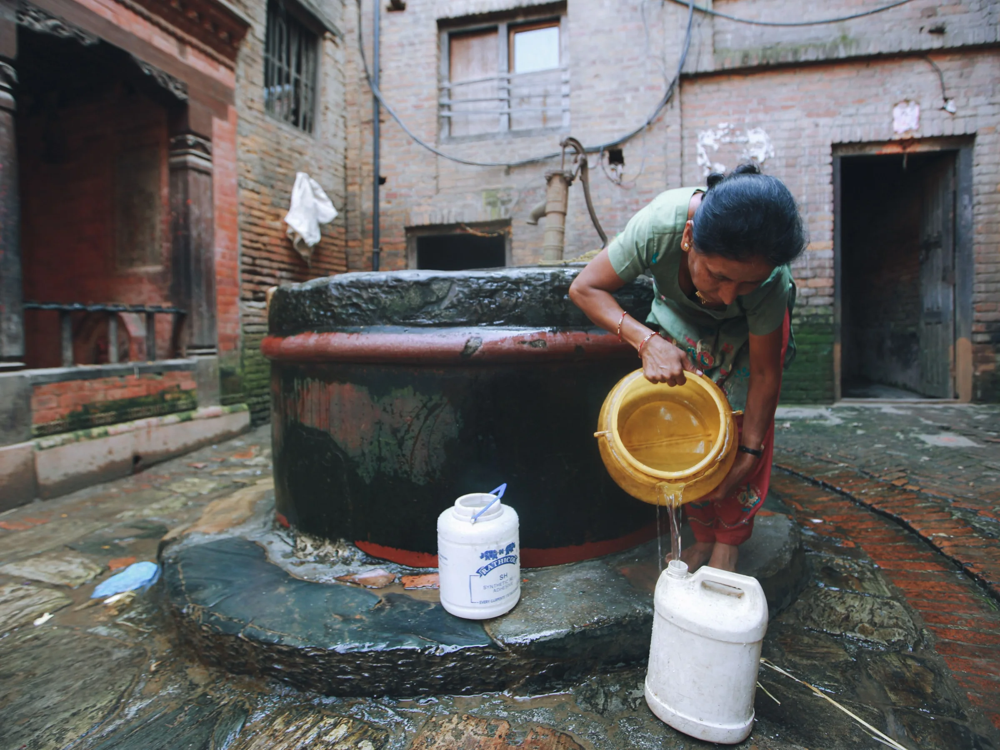
Understand WISE
The Problem
Supply-side indicators tell us what has been built. But whether it’s working for the people it was meant to serve is a different question, and that’s the one user-side data answers.
You can live right next to a well or a water point and still be water insecure. The water might be unpredictably available, costly, or unsafe.
For decades, that experience went unmeasured. Instead, we counted pipes, wells, and rainfall. WISE brings a human voice to water insecurity.
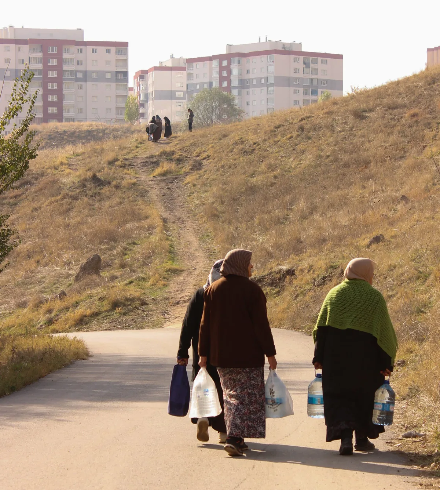
“We’ve been guilty of measuring the wrong things in the water sector. We’ve been measuring infrastructure and access, we’ve been looking at pipes and not at people.”
Andrew Roby, Foreign, Commonwealth & Development Office
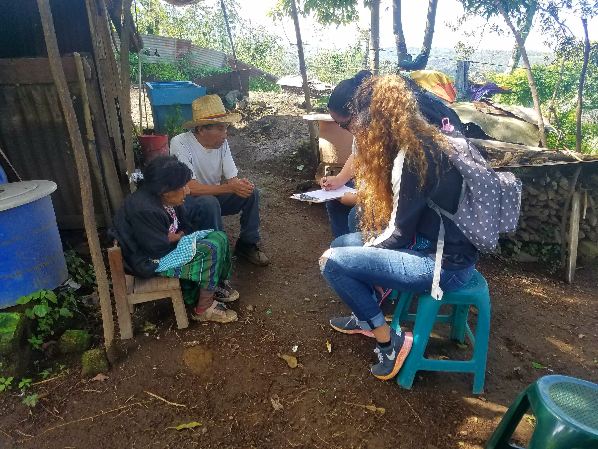
The Solution
A short set of questions. A score that reflects real life.
Professor Sera Young led a group of global collaborators to develop the WISE Scales, which ask 12 questions about how water shows up in daily life. The questions cover problems with consumption (drinking, cooking), hygiene (bathing, handwashing), and the psychological burden of water problems (worry, shame, anger).
Each answer is scored and summed. From there, a water insecurity level can be assigned: no, low, medium, or high.
The questions take roughly 3 minutes.
“With better data, better analytics, we can really elevate how much of a priority water is for the well-being of citizens and future generations.”
Aude-Sophie Rodella, World Bank
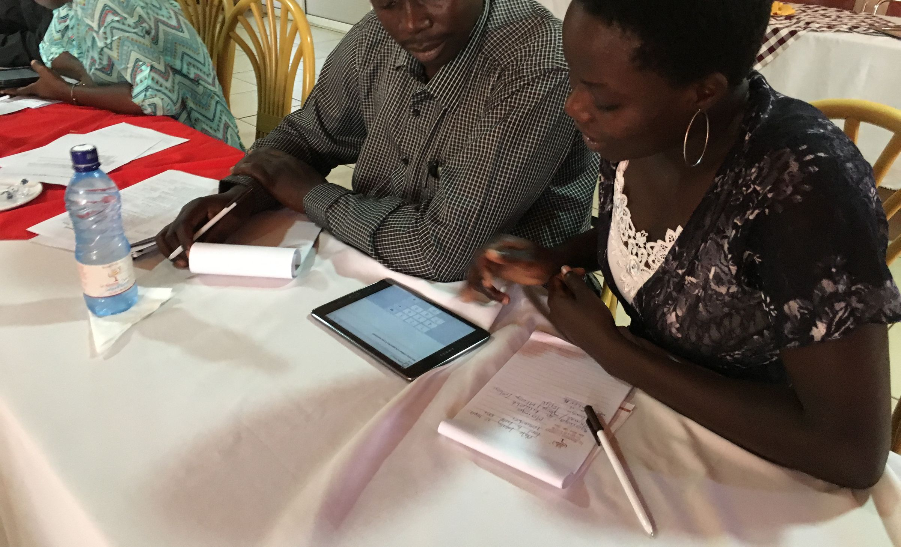
The Rigor
Tested until it held its meaning everywhere.
The final questions in the WISE Scales were selected from many candidate items that were piloted, revised, and tested in dozens of low-, middle-, and high-income countries. Rigorous qualitative and quantitative analyses ensured reliability, equivalence, and validity.
- Piloted
- Revised
- Established as reliable, equivalent and valid
- Translated
Reliable
The numbers hold up across populations.
Equivalent
The values can be compared.
Valid
The concept of water insecurity is being accurately captured.
Research
The WISE Scales rest on published, peer-reviewed research.
Core scale development papers
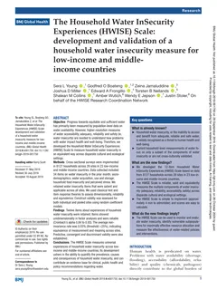
The Household Water InSecurity Experiences (HWISE) Scale: development and validation of a household water insecurity measure for low-income and middle-income countries (opens in new tab). Young et al., BMJ Global Health, 2019.
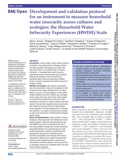
Development and validation protocol for an instrument to measure household water insecurity across cultures and ecologies: the Household Water InSecurity Experiences (HWISE) Scale (opens in new tab). Young et al., BMJ Open, 2019.
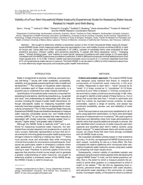
Validity of a four-item Household Water Insecurity Experiences Scale for assessing water issues related to health and well-being (opens in new tab). Young et al., American Journal of Tropical Medicine and Hygiene, 2021.
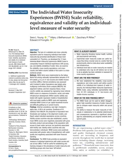
The Individual Water Insecurity Experiences (IWISE) Scale: reliability, equivalence and validity of an individual-level measure of water security (opens in new tab). Young, Bethancourt, Ritter & Frongillo, BMJ Global Health, 2021.
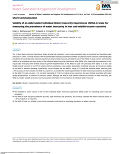
Validity of an abbreviated Individual Water Insecurity Experiences (IWISE-4) Scale for measuring the prevalence of water insecurity in low- and middle-income countries (opens in new tab). Bethancourt, Frongillo & Young, Journal of Water, Sanitation and Hygiene for Development, 2022.
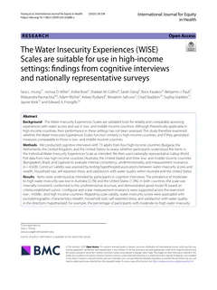
The Water Insecurity Experiences (WISE) Scales are suitable for use in high-income settings (opens in new tab). Young et al., International Journal for Equity in Health, 2025.
The WISE Scales are supported by
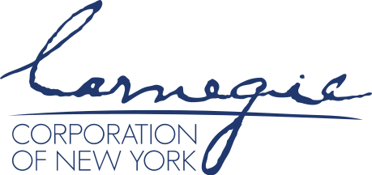

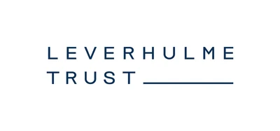